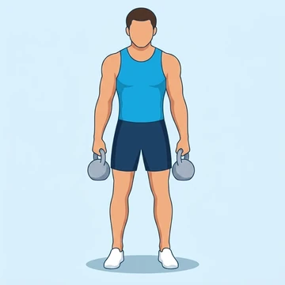

Kettlebell Shrug
This isolation exercise targets the upper trapezius muscles by elevating the shoulders, enhancing shoulder stability and neck strength.
Back · Kettlebell · Beginner


Muscles worked by the Kettlebell Shrug
Primary
Secondary
Also called: trap, traps, trapezius, upper traps, lower traps, mid traps.
Equipment
Also called: kb, cast iron kettlebell, competition kettlebell, girya.
How to do the Kettlebell Shrug
- Stand tall with feet hip-width apart, holding a kettlebell in each hand with palms facing your body.
- Keep your arms straight and shoulders relaxed.
- Elevate your shoulders straight up towards your ears, squeezing your traps at the top.
- Hold the contraction briefly.
- Slowly lower your shoulders back to the starting position with control.
- Repeat for the desired number of repetitions.
Form tips
- Focus on moving only your shoulders, keeping your arms straight throughout the movement.
- Avoid rolling your shoulders; move them straight up and down.
- Maintain a neutral spine and engaged core to prevent lower back strain.
- Use a weight that allows for full range of motion and controlled execution.
At a glance
| Body part | Back |
|---|---|
| Category | Strength |
| Force type | Pull |
| Mechanic | Isolation |
| Difficulty | Beginner |
| Equipment | Kettlebell |
| Goals | Hypertrophy |
| Tags | Pull day |
| MET | 5.0 (metabolic equivalent, for calorie estimates) |
| Unilateral | No |
| Bodyweight | No |
| Dataset id | kettlebell-shrug |
Kettlebell Shrug in German & Spanish
| German | Kettlebell-Schulterheben |
|---|---|
| Spanish | Encogimiento de Hombros con Kettlebell |
Descriptions, instructions and tips ship in all three languages in the JSON.
Related exercises
Exercise data (JSON)
The record below is exactly what exercises.json ships for this exercise — names, descriptions, instructions and tips in English, German and Spanish.
{
"id": "kettlebell-shrug",
"name_en": "Kettlebell Shrug",
"name_de": "Kettlebell-Schulterheben",
"name_es": "Encogimiento de Hombros con Kettlebell",
"description_en": "This isolation exercise targets the upper trapezius muscles by elevating the shoulders, enhancing shoulder stability and neck strength.",
"description_de": "Diese Isolationsübung zielt auf die oberen Trapezmuskeln ab, indem sie die Schultern anhebt und die Schulterstabilität sowie Nackenstärke verbessert.",
"description_es": "Este ejercicio de aislamiento trabaja los músculos trapecios superiores elevando los hombros, mejorando la estabilidad del hombro y la fuerza del cuello.",
"category": "strength",
"force_type": "pull",
"mechanic": "isolation",
"difficulty": "beginner",
"equipment": "kettlebell",
"body_part": "back",
"primary_muscles": [
"trapezius"
],
"secondary_muscles": [
"forearm_flexors"
],
"goals": [
"hypertrophy"
],
"tags": [
"pull_day"
],
"variation_group": "shrug",
"is_unilateral": false,
"is_bodyweight": false,
"instructions_en": [
"Stand tall with feet hip-width apart, holding a kettlebell in each hand with palms facing your body.",
"Keep your arms straight and shoulders relaxed.",
"Elevate your shoulders straight up towards your ears, squeezing your traps at the top.",
"Hold the contraction briefly.",
"Slowly lower your shoulders back to the starting position with control.",
"Repeat for the desired number of repetitions."
],
"instructions_de": [
"Stelle dich aufrecht hin, Füße hüftbreit auseinander, und halte eine Kettlebell in jeder Hand, Handflächen zum Körper.",
"Halte deine Arme gestreckt und die Schultern entspannt.",
"Hebe deine Schultern gerade nach oben zu deinen Ohren und spanne die Fallenmuskeln oben an.",
"Halte die Kontraktion kurz.",
"Senke deine Schultern langsam und kontrolliert in die Ausgangsposition zurück.",
"Wiederhole dies für die gewünschte Anzahl an Wiederholungen."
],
"instructions_es": [
"Ponte de pie con los pies al ancho de las caderas, sosteniendo una kettlebell en cada mano con las palmas hacia tu cuerpo.",
"Mantén los brazos rectos y los hombros relajados.",
"Eleva los hombros directamente hacia tus orejas, contrayendo los trapecios en la parte superior.",
"Mantén la contracción brevemente.",
"Baja lentamente los hombros a la posición inicial con control.",
"Repite el movimiento para el número deseado de repeticiones."
],
"tips_en": [
"Focus on moving only your shoulders, keeping your arms straight throughout the movement.",
"Avoid rolling your shoulders; move them straight up and down.",
"Maintain a neutral spine and engaged core to prevent lower back strain.",
"Use a weight that allows for full range of motion and controlled execution."
],
"tips_de": [
"Konzentriere dich darauf, nur deine Schultern zu bewegen, halte deine Arme während der gesamten Bewegung gestreckt.",
"Vermeide es, die Schultern zu rollen; bewege sie gerade auf und ab.",
"Halte eine neutrale Wirbelsäule und einen angespannten Rumpf, um eine Belastung des unteren Rückens zu vermeiden.",
"Verwende ein Gewicht, das eine volle Bewegungsfreiheit und kontrollierte Ausführung ermöglicht."
],
"tips_es": [
"Concéntrate en mover solo los hombros, manteniendo los brazos rectos durante todo el movimiento.",
"Evita rodar los hombros; muévelos directamente hacia arriba y hacia abajo.",
"Mantén una columna vertebral neutra y el core activado para prevenir la tensión en la espalda baja.",
"Usa un peso que permita un rango completo de movimiento y una ejecución controlada."
],
"met": 5.0,
"images": {
"flat": {
"start": "images/flat/kettlebell-shrug-start.webp",
"peak": "images/flat/kettlebell-shrug-peak.webp"
}
}
}Fetch just this exercise
const { exercises } = await fetch(
"https://exercise-dataset.com/exercises.json"
).then(r => r.json());
const ex = exercises.find(e => e.id === "kettlebell-shrug");Free for personal and commercial in-app use with attribution (“Exercise data by RepDB”) — see the license and ready-made attribution snippets. Redistributing the data as a dataset or API is not permitted.